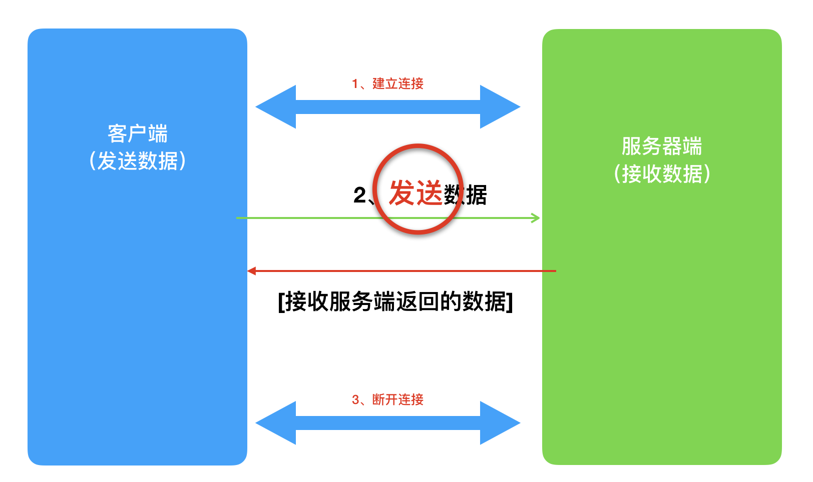
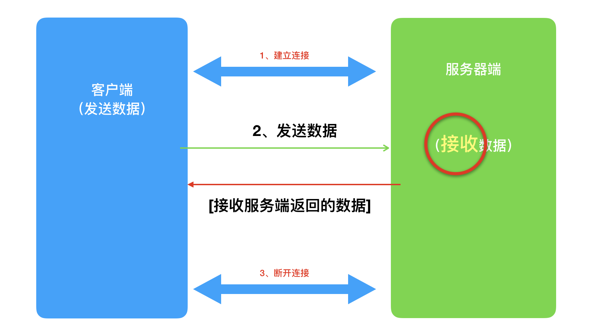
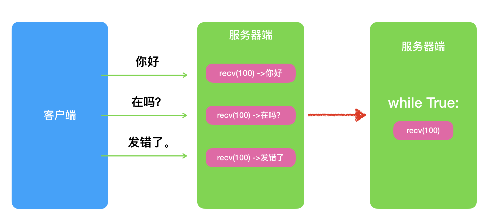
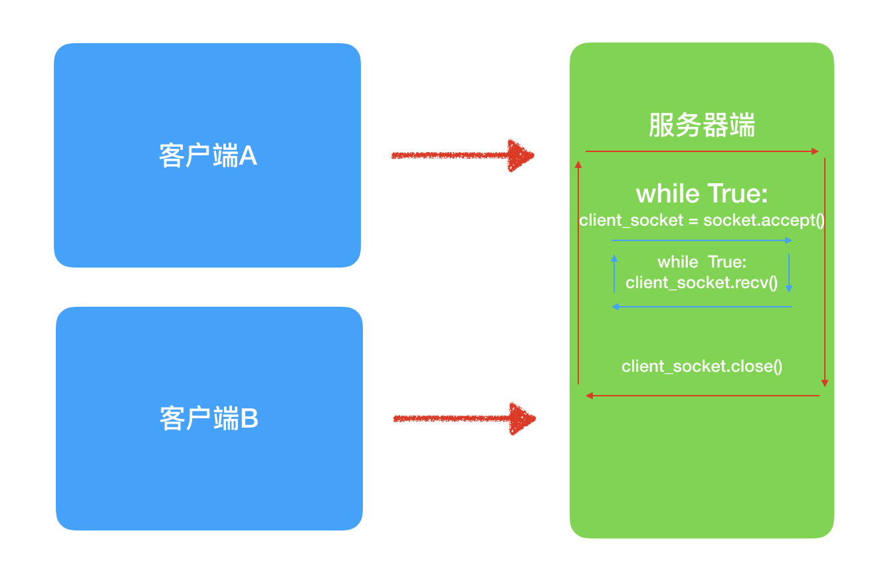

<!DOCTYPE lake>
<h2 data-lake-id="afu2V" data-lake-index-type="2" id="afu2V"><span data-lake-id="u2d33abee" id="u2d33abee" style="color: rgba(0, 0, 0, 0.87)">TCP客户端</span></h2><p data-lake-id="u7b476652" id="u7b476652"><span data-lake-id="u3485ddb7" id="u3485ddb7" style="color: rgba(0, 0, 0, 0.87)">tcp的客户端要比服务器端简单很多，tcp和服务端建立连接后，直接发送数据</span></p><p data-lake-id="ua2384256" id="ua2384256"></p><h3 data-lake-id="N4qoa" data-lake-index-type="2" id="N4qoa"><span data-lake-id="ud28e1ba7" id="ud28e1ba7">开发步骤</span></h3><ol list="u10b1e63d"><li data-lake-id="u1dfa9a3d" fid="u6cde0ca0" id="u1dfa9a3d"><span data-lake-id="udc9968db" id="udc9968db">导入</span><code data-lake-id="u03ad6006" id="u03ad6006"><span data-lake-id="u74ea7ee2" id="u74ea7ee2">socket</span></code><span data-lake-id="u63c74203" id="u63c74203">模块</span></li><li data-lake-id="u8b51c34a" fid="u6cde0ca0" id="u8b51c34a"><span data-lake-id="u9103e283" id="u9103e283">创建</span><code data-lake-id="uebf63841" id="uebf63841"><span data-lake-id="u5ace79b0" id="u5ace79b0">socket</span></code><span data-lake-id="ue764b7e3" id="ue764b7e3">套接字</span></li><li data-lake-id="ue144c1bf" fid="u6cde0ca0" id="ue144c1bf"><span data-lake-id="ubf6c3e08" id="ubf6c3e08">建立tcp连接（和服务端建立连接）</span></li><li data-lake-id="u61d18aba" fid="u6cde0ca0" id="u61d18aba"><span data-lake-id="ud2195601" id="ud2195601">开始发送数据（到服务端）</span></li><li data-lake-id="u059dae91" fid="u6cde0ca0" id="u059dae91"><span data-lake-id="ue6b34066" id="ue6b34066">关闭套接字</span></li></ol><h3 data-lake-id="doPrS" data-lake-index-type="2" id="doPrS"><span data-lake-id="u7f8f7f7e" id="u7f8f7f7e" style="color: rgba(0, 0, 0, 0.87)">参考代码</span></h3><h4 data-lake-id="c1AyT" data-lake-index-type="2" id="c1AyT"><span data-lake-id="ufc9fed42" id="ufc9fed42">TCP客户端发送数据</span></h4><span class="yuque-card-unsupported">[codeblock]</span><h4 data-lake-id="cr0pc" data-lake-index-type="2" id="cr0pc"><span data-lake-id="ub8aa4079" id="ub8aa4079">TCP客户端发送并接收数据</span></h4><span class="yuque-card-unsupported">[codeblock]</span><h3 data-lake-id="yA9sA" data-lake-index-type="2" id="yA9sA"><span data-lake-id="u36481eb0" id="u36481eb0" style="color: rgba(0, 0, 0, 0.87)">关键方法回顾</span></h3><ul list="u72e6f607"><li data-lake-id="u3c014809" fid="u99fed5f1" id="u3c014809"><code data-lake-id="u17323ed1" id="u17323ed1"><span data-lake-id="u46c83519" id="u46c83519">socket.socket(socket.AF_INET, socket.SOCK_STREAM)</span></code></li></ul><p data-lake-id="u1d91e004" id="u1d91e004"><span data-lake-id="ub1faba5f" id="ub1faba5f">创建socket套接字对象，</span><code data-lake-id="u66237ce8" id="u66237ce8"><span data-lake-id="uc95f01ae" id="uc95f01ae">socket.AF_INET</span></code><span data-lake-id="uefc08ad0" id="uefc08ad0">代表IPv4，</span><code data-lake-id="ub9c343ff" id="ub9c343ff"><span data-lake-id="u53788df5" id="u53788df5">socket.SOCK_STREAM</span></code><span data-lake-id="ub6f7e34b" id="ub6f7e34b">TCP数据流</span></p><p data-lake-id="ub3e8c355" id="ub3e8c355"><span data-lake-id="ua7738a5b" id="ua7738a5b">​</span><br/></p><ul list="u72e6f607" start="2"><li data-lake-id="u86ffae52" fid="u99fed5f1" id="u86ffae52"><span data-lake-id="u24516de6" id="u24516de6" style="color: rgb(55, 71, 79)">​</span><code data-lake-id="u983378bb" id="u983378bb"><span data-lake-id="uc15d532b" id="uc15d532b" style="color: rgb(55, 71, 79)">socket.connect(address)</span></code></li></ul><p data-lake-id="u3c2650e0" id="u3c2650e0"><span data-lake-id="u0e3a084f" id="u0e3a084f" style="color: rgba(0, 0, 0, 0.87)">主动初始化TCP服务器连接，一般address的格式为元组（hostname, port），如果连接出错，返回socket.error错误。</span></p><p data-lake-id="u35bd8010" id="u35bd8010"><span data-lake-id="uec1ef0cc" id="uec1ef0cc" style="color: rgba(0, 0, 0, 0.87)">​</span><br/></p><ul list="ua6594d05"><li data-lake-id="uf39e1f81" fid="u00f1d52e" id="uf39e1f81"><code data-lake-id="uc1d59084" id="uc1d59084"><span data-lake-id="u3a19e37a" id="u3a19e37a" style="color: rgb(55, 71, 79)">socket.send(要发送的数据)</span></code><span data-lake-id="u1bf8a050" id="u1bf8a050" style="color: rgba(0, 0, 0, 0.87)"> </span></li></ul><p data-lake-id="u5dd01acf" id="u5dd01acf"><span data-lake-id="ued7c019f" id="ued7c019f" style="color: rgba(0, 0, 0, 0.87)">向服务端发送数据，此处的数据必须是二进制类型（字符串则需要编码）</span></p><p data-lake-id="ub8cf1fd4" id="ub8cf1fd4"><span data-lake-id="uec5a0b0d" id="uec5a0b0d" style="color: rgba(0, 0, 0, 0.87)">​</span><br/></p><ul list="ubd0e2032"><li data-lake-id="ucba3540c" fid="ud9210f71" id="ucba3540c"><code data-lake-id="ucde2213e" id="ucde2213e"><span data-lake-id="uecf8dff4" id="uecf8dff4" style="color: rgb(55, 71, 79)">socket.recv(缓冲区大小)</span></code></li></ul><p data-lake-id="u365d3f8e" id="u365d3f8e"><span data-lake-id="u3a0dd1ba" id="u3a0dd1ba" style="color: rgba(0, 0, 0, 0.87)">接收TCP数据，数据以二进制形式返回，bufsize指定要每次接收的最大数据量。</span></p><p data-lake-id="u78d1dafa" id="u78d1dafa"><span data-lake-id="uee3710fe" id="uee3710fe" style="color: rgba(0, 0, 0, 0.87)">​</span><br/></p><h2 data-lake-id="PbMoP" data-lake-index-type="2" id="PbMoP"><span data-lake-id="u63c3cb44" id="u63c3cb44" style="color: rgba(0, 0, 0, 0.87)">TCP服务端</span></h2><p data-lake-id="u220e72c4" id="u220e72c4"><span data-lake-id="uf22d47b8" id="uf22d47b8" style="color: rgba(0, 0, 0, 0.87)">tcp服务器：和客户端建立连接后，接收/发送数据给客户端</span></p><p data-lake-id="ucee522a7" id="ucee522a7"></p><h3 data-lake-id="SvQdf" data-lake-index-type="2" id="SvQdf"><span data-lake-id="u50e787db" id="u50e787db">开发步骤</span></h3><ol list="udff400a2"><li data-lake-id="u777e23cf" fid="uf2a1b82a" id="u777e23cf"><code data-lake-id="ub3d269a6" id="ub3d269a6"><span data-lake-id="u4b604644" id="u4b604644">socket</span></code><span data-lake-id="ub6f2a71a" id="ub6f2a71a">创建一个套接字</span></li><li data-lake-id="uf677f4d1" fid="uf2a1b82a" id="uf677f4d1"><code data-lake-id="u5edb72a5" id="u5edb72a5"><span data-lake-id="u0901f278" id="u0901f278">bind</span></code><span data-lake-id="uce4fc127" id="uce4fc127">绑定ip和port</span></li><li data-lake-id="u7b8923c5" fid="uf2a1b82a" id="u7b8923c5"><code data-lake-id="u3c2d42ac" id="u3c2d42ac"><span data-lake-id="u8a88b518" id="u8a88b518">listen</span></code><span data-lake-id="ubf8db05c" id="ubf8db05c">使套接字设置为被动模式</span></li><li data-lake-id="ua3adbab5" fid="uf2a1b82a" id="ua3adbab5"><code data-lake-id="u6caac1da" id="u6caac1da"><span data-lake-id="ub147189e" id="ub147189e">accept</span></code><span data-lake-id="uf724890c" id="uf724890c">等待客户端的链接</span></li><li data-lake-id="ud43bb989" fid="uf2a1b82a" id="ud43bb989"><code data-lake-id="u59dfd09a" id="u59dfd09a"><span data-lake-id="u7eb930bc" id="u7eb930bc">recv</span></code><span data-lake-id="u6fc67a8b" id="u6fc67a8b">/</span><code data-lake-id="u05b5c655" id="u05b5c655"><span data-lake-id="ub28e8db9" id="ub28e8db9">send</span></code><span data-lake-id="u355c8ff3" id="u355c8ff3">接收发送数据</span></li></ol><h3 data-lake-id="gGjGP" data-lake-index-type="2" id="gGjGP"><span data-lake-id="uefed8bf2" id="uefed8bf2" style="color: rgba(0, 0, 0, 0.87)">参考代码</span></h3><h4 data-lake-id="e6Fan" data-lake-index-type="2" id="e6Fan"><span data-lake-id="u60b39c1d" id="u60b39c1d">接收客户端消息并回复</span></h4><span class="yuque-card-unsupported">[codeblock]</span><h4 data-lake-id="WVAWa" data-lake-index-type="2" id="WVAWa"><span data-lake-id="uc52489f3" id="uc52489f3" style="color: rgba(0, 0, 0, 0.87)">接受客户端发来的多条信息</span></h4><p data-lake-id="u5c78117d" id="u5c78117d"></p><p data-lake-id="u08768a03" id="u08768a03"><br/></p><span class="yuque-card-unsupported">[codeblock]</span><h4 data-lake-id="nqryI" data-lake-index-type="2" id="nqryI"><span data-lake-id="ucefd73b7" id="ucefd73b7" style="color: rgba(0, 0, 0, 0.87)">允许客户端多次连接</span></h4><p data-lake-id="ub7c9f4b5" id="ub7c9f4b5"></p><span class="yuque-card-unsupported">[codeblock]</span><p data-lake-id="u81468fe4" id="u81468fe4"><br/></p><p data-lake-id="u0408b018" id="u0408b018"><span data-lake-id="u488c6cef" id="u488c6cef">注意，仔细想想不难发现，这里同时还是只能有一个客户端接入进来。</span></p><p data-lake-id="u2e7d63a3" id="u2e7d63a3"><br/></p><h2 data-lake-id="M6nwK" data-lake-index-type="2" id="M6nwK"><span data-lake-id="u29e8b8fb" id="u29e8b8fb" style="color: rgba(0, 0, 0, 0.87)">TCP应用程序开发总结</span></h2><ol list="u9ea422cc"><li data-lake-id="u86baa37b" fid="u143e3bae" id="u86baa37b"><span data-lake-id="u2a1b9545" id="u2a1b9545" style="color: rgba(0, 0, 0, 0.87)">TCP 客户端程序想要和 TCP 服务端程序进行通信时必须要先</span><strong><span data-lake-id="u87bd351f" id="u87bd351f" style="color: rgba(0, 0, 0, 0.87)">建立连接</span></strong></li><li data-lake-id="u37b6a2fc" fid="u143e3bae" id="u37b6a2fc"><span data-lake-id="u2585df60" id="u2585df60" style="color: rgba(0, 0, 0, 0.87)">TCP 客户端程序一般不需要绑定端口号（会自动随机分配），因为客户端是主动发起建立连接的。</span></li><li data-lake-id="u24a85a06" fid="u143e3bae" id="u24a85a06"><strong><span data-lake-id="u1b7985d5" id="u1b7985d5" style="color: rgba(0, 0, 0, 0.87)">TCP 服务端程序必须绑定端口号</span></strong><span data-lake-id="u1ec07ec2" id="u1ec07ec2" style="color: rgba(0, 0, 0, 0.87)">，否则客户端找不到这个 TCP 服务端程序。</span></li><li data-lake-id="u3ffa094e" fid="u143e3bae" id="u3ffa094e"><span data-lake-id="uba790ec5" id="uba790ec5" style="color: rgba(0, 0, 0, 0.87)">执行 </span><code data-lake-id="u9d629ee6" id="u9d629ee6"><span data-lake-id="uecd3c783" id="uecd3c783" style="color: rgba(0, 0, 0, 0.87)">listen</span></code><span data-lake-id="ue3690e50" id="ue3690e50" style="color: rgba(0, 0, 0, 0.87)"> 后的socket套接字是被动套接字，</span><strong><span data-lake-id="ubad8372e" id="ubad8372e" style="color: rgba(0, 0, 0, 0.87)">只负责接收新的客户端的连接请求，不能收发消息。</span></strong></li><li data-lake-id="u73717838" fid="u143e3bae" id="u73717838"><span data-lake-id="uc5b3da80" id="uc5b3da80" style="color: rgba(0, 0, 0, 0.87)">当 TCP 客户端程序和 TCP 服务端程序连接成功后， TCP 服务端会会客户端产生一个</span><strong><span data-lake-id="u08ff0623" id="u08ff0623" style="color: rgba(0, 0, 0, 0.87)">新的套接字</span></strong><span data-lake-id="ue64141d7" id="ue64141d7" style="color: rgba(0, 0, 0, 0.87)">，收发客户端消息使用该套接字。</span></li><li data-lake-id="u40016a13" fid="u143e3bae" id="u40016a13"><span data-lake-id="u9836168b" id="u9836168b" style="color: rgba(0, 0, 0, 0.87)">TCP服务端关闭 </span><code data-lake-id="uedd2ef46" id="uedd2ef46"><span data-lake-id="ude91dcbd" id="ude91dcbd" style="color: rgba(0, 0, 0, 0.87)">accept</span></code><span data-lake-id="u78e5554a" id="u78e5554a" style="color: rgba(0, 0, 0, 0.87)"> 返回的新套接字意味着和这个客户端已经</span><strong><span data-lake-id="udb088944" id="udb088944" style="color: rgba(0, 0, 0, 0.87)">通信完毕</span></strong><span data-lake-id="u5bf34ca1" id="u5bf34ca1" style="color: rgba(0, 0, 0, 0.87)">。</span></li><li data-lake-id="u43234280" fid="u143e3bae" id="u43234280"><span data-lake-id="u40a5418f" id="u40a5418f" style="color: rgba(0, 0, 0, 0.87)">TCP服务端关闭自己的套接字意味着服务端关闭了，新的客户端不能连接服务端，但是之前已经接成功的客户端还能正常通信。</span></li><li data-lake-id="u45afe111" fid="u143e3bae" id="u45afe111"><span data-lake-id="u044a9bf0" id="u044a9bf0" style="color: rgba(0, 0, 0, 0.87)">当客户端的套接字 </span><code data-lake-id="u95f5ac41" id="u95f5ac41"><span data-lake-id="ufdfe8184" id="ufdfe8184" style="color: rgba(0, 0, 0, 0.87)">close</span></code><span data-lake-id="u543bb815" id="u543bb815" style="color: rgba(0, 0, 0, 0.87)"> 后，服务器端的 </span><code data-lake-id="u95113d88" id="u95113d88"><span data-lake-id="u1a152a7b" id="u1a152a7b" style="color: rgba(0, 0, 0, 0.87)">recv</span></code><span data-lake-id="ua462c2c8" id="ua462c2c8" style="color: rgba(0, 0, 0, 0.87)"> 会解除阻塞，返回的数据长度为</span><code data-lake-id="u77f29062" id="u77f29062"><span data-lake-id="ud2ea2005" id="ud2ea2005" style="color: rgba(0, 0, 0, 0.87)">0</span></code><span data-lake-id="uaa2362d2" id="uaa2362d2" style="color: rgba(0, 0, 0, 0.87)">；此时，服务端可以通过返回数据的长度来判断客户端是否已经下线，</span></li><li data-lake-id="u38aa4ee0" fid="u143e3bae" id="u38aa4ee0"><span data-lake-id="ua406da97" id="ua406da97" style="color: rgba(0, 0, 0, 0.87)">反之，如果服务端为客户端创建的的套接字对象 </span><code data-lake-id="u040a6308" id="u040a6308"><span data-lake-id="ued9adb6f" id="ued9adb6f" style="color: rgba(0, 0, 0, 0.87)">close</span></code><span data-lake-id="u3ae88643" id="u3ae88643" style="color: rgba(0, 0, 0, 0.87)"> 后，客户端的 </span><code data-lake-id="ubbcf8107" id="ubbcf8107"><span data-lake-id="u67b8c5d0" id="u67b8c5d0" style="color: rgba(0, 0, 0, 0.87)">recv</span></code><span data-lake-id="u83215f2c" id="u83215f2c" style="color: rgba(0, 0, 0, 0.87)"> 也会解阻塞，返回的数据长度也为</span><code data-lake-id="u4b5e2a77" id="u4b5e2a77"><span data-lake-id="u92b9707e" id="u92b9707e" style="color: rgba(0, 0, 0, 0.87)">0</span></code><span data-lake-id="u65243250" id="u65243250" style="color: rgba(0, 0, 0, 0.87)">。</span></li></ol>